Tedbiriniz Bizim Önceliğimiz...
Ankara'da yarım asra yaklaşan tecrübemizle yangın söndürme sistemlerinde lider kuruluş.
Hakkımızda
1981 yılında kurulan Hakan Yangın Sistemleri, Ankara’nın kalbinde temellerini atmış ve o günden bugüne "can ve mal güvenliği" ilkesinden ödün vermeden yoluna devam etmiştir.
Sektördeki 40 yılı aşkın birikimimizle, yangın söndürme tüplerinin dolumundan otomatik sistemlerin kurulumuna kadar geniş bir yelpazede profesyonel çözümler sunuyoruz. Mermerci Han’daki merkezimizde, tecrübemizi modern teknolojiyle birleştirerek siz değerli müşterilerimizin güvenliğini sağlamak için çalışıyoruz.
Neler Yapıyoruz?
Tüp Dolumu
TSE standartlarında, garantili yangın tüpü dolum ve periyodik bakım hizmetleri.
Alarm Sistemleri
Duman algılama ve erken uyarı sistemleri kurulum ve teknik servis.
Söndürme Sistemleri
Otomatik sulu,gazlı ve davlumbaz söndürme sistemleri ve mikro söndürme sistemleri anahtar teslim montaj.
Ürünlerimiz
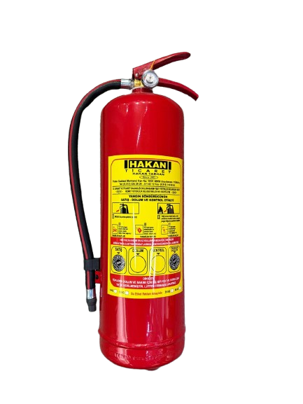
ABC-KKT-YSC Yangın Tüpü
A,B ve C sınıfı yangınlarda etkili olan çok amaçlı söndürücü(6kg,12 kg).
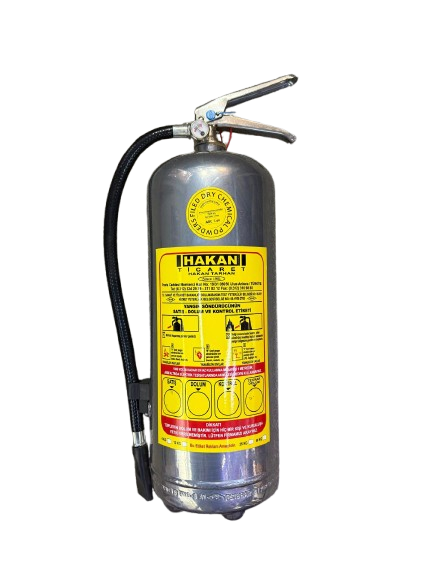
FM200 227 EA Gazlı YSC Yangın Tüpü
Paslanmaz gazlı yangın söndürme cihazı, A ve B sınıfı yangınlarda oldukça etkilidir.
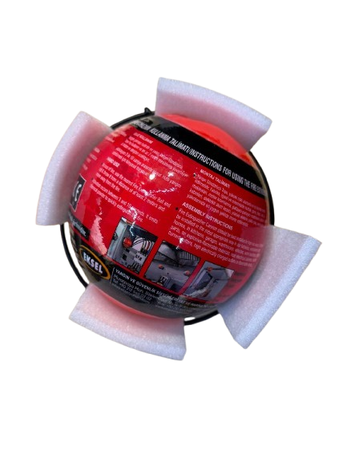
Yangın Söndürme Topu
Otomatik yangın söndürme topu.
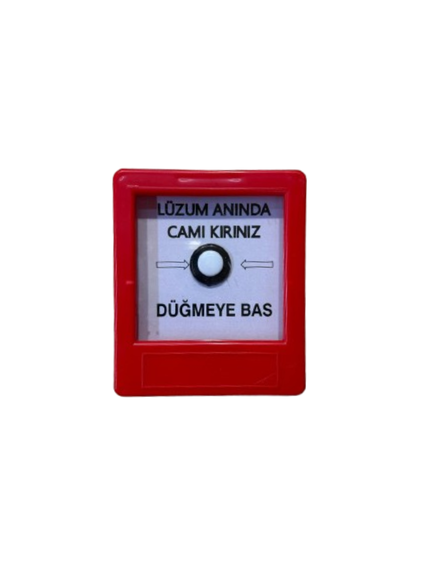
Yangın İhbar Butonu
Kırmızı manuel yangın alarm butonu-sıva üstü.
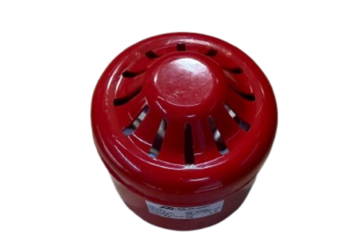
Elektronik Yangın Sireni
Konvansiyonel elektronik yangın sireni (Kırmızı).
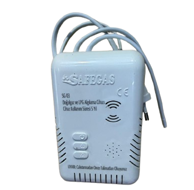
Gaz Alarm Cihazı
Ev tipi gaz alarm cihazı(Doğal gaz ve lpg uyumlu).
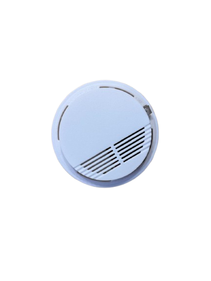
Optik Duman Dedektörü
Konvansiyonel optik duman dedektörü.
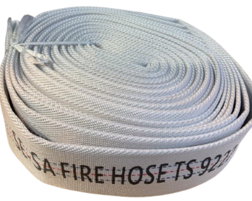
Yangın Hortumu
TS 9222 standartlı bez yangın hortumu.
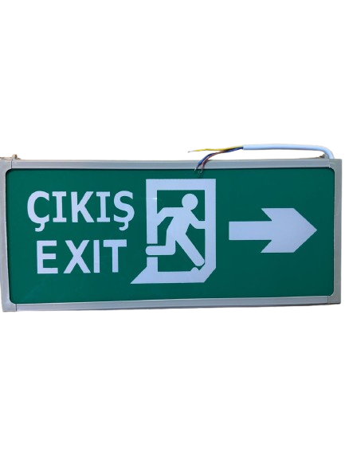
Acil Çıkış Aydınlatma Armatürü
Led'li acil çıkış yönlendirme levhası(Işıklı exit armütürü).
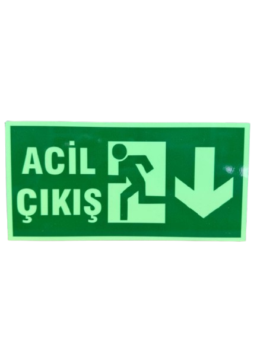
Fotolümen Acil Çıkış Levhası
Elektriksiz parlayan acil çıkış levhası.
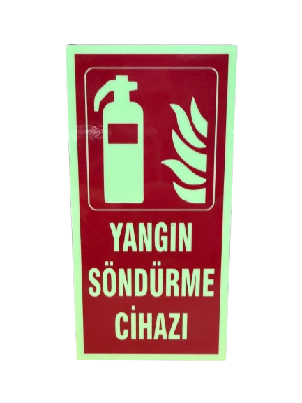
Yangın Söndürme Cihazı Yer İşaret Levhası
Fotolümen yangın söndürme cihazı levhası.
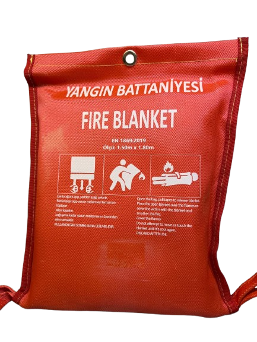
Yangın Battaniyesi
1.50x1.80 ebatlarında yüksek sıcaklıklara dayanıklı cam elyaftan üretilmiş yangın battaniyesi.
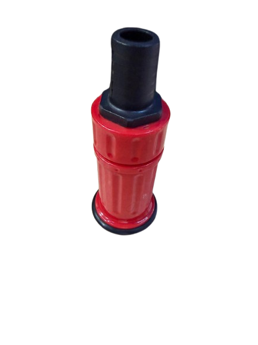
Yangın Hortum Lansı(Nozulu)
Ayarlı püskürtme başlığı .
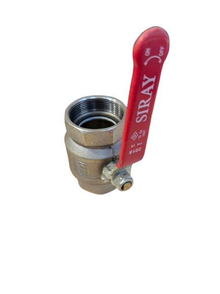
Küresel Yangın Vanası
2'' Pirinç küresel vana(yangın tesisat uyumlu).
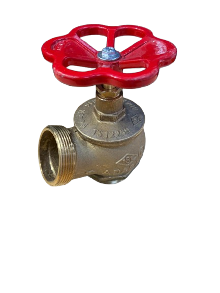
Yangın Vanası
2'' Yangın vanası.
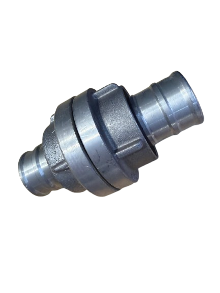
Yangın Hortum Rekoru
2'' Aliminyum yangın hortum rekoru .
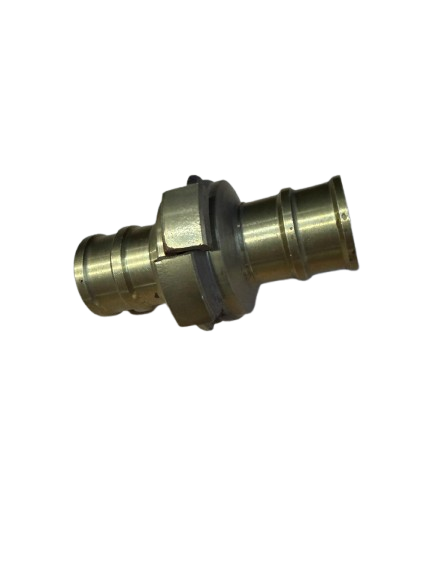
Yangın Hortum Rekoru
2''İtalyan pirinç yangın hortum rekoru .
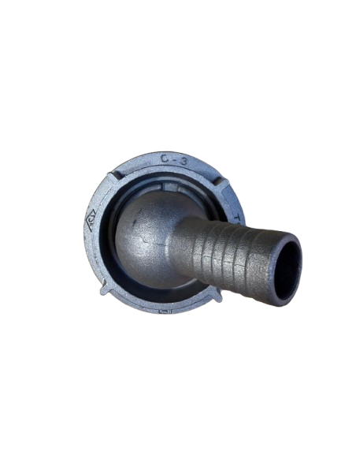
Yangın Tesisatı Düşürücü Rediksiyon(Stroz Tipi)
2'' -1 Düşürücü rediksiyon .
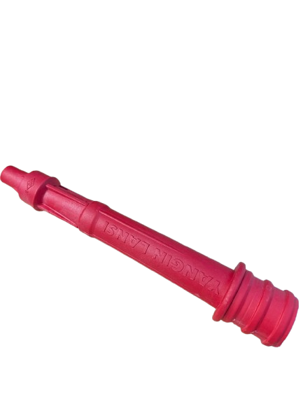
Plastik Yangın Lansı
Plastik yangın hortum lansı(nozul) .
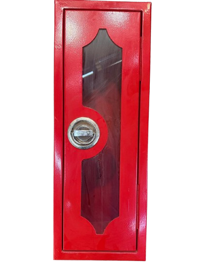
Yangın Tüpü Kabini
Tekli yangın söndürme tüpü kabini(6 kg uyumlu) .
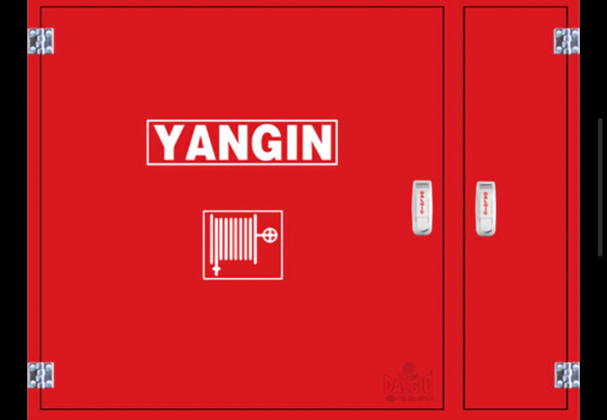
Tüp Kabinli Yangın Dolabı
70x90x21 ölçülerinde tüp kabinli yangın dolabı.
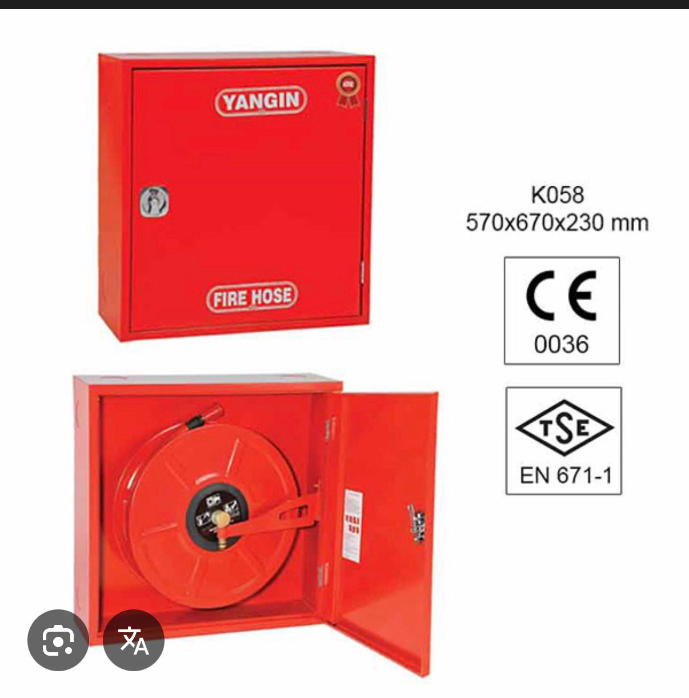
Yangın Dolabı
70x65x21 ölçülerinde yangın dolabı .
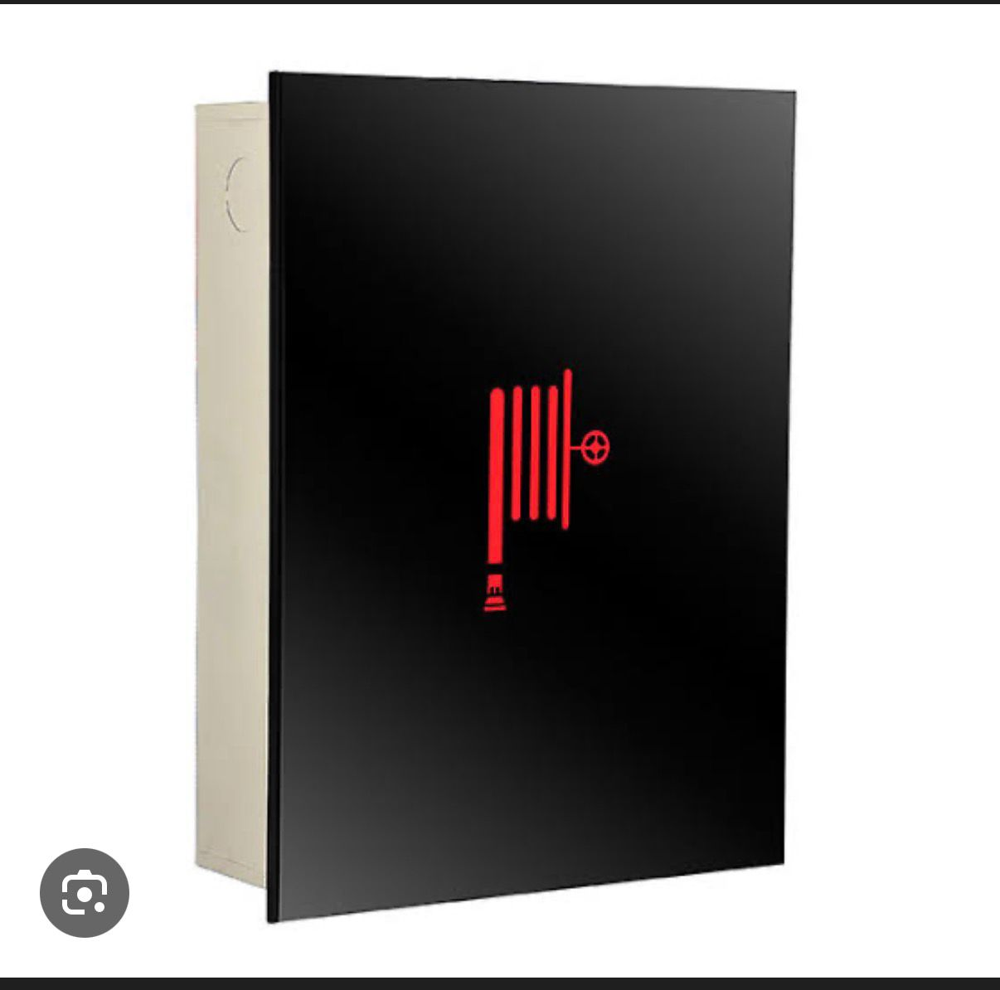
Yangın Dolabı
Füme camlı yangın dolabı .